În stînga este slide-ul din curs, în dreapta aceeași figură sau același tabel, calculat în browser din aceleași date. Butonul ▶ modifică parametrul pas cu pas; casetele „Exemplu rezolvat” refac calculul cu cifrele capitolului.
Cicluri și frecvențe · Densitatea spectrală · Periodograma · Estimarea spectrului · Cicluri în datele economice și energetice · Memoria lungă: polul de la zero · Filtre liniare · Două serii: coerență și fază · O trimitere: wavelets
Cicluri și frecvențe
Un ciclu: amplitudine, frecvență, fază
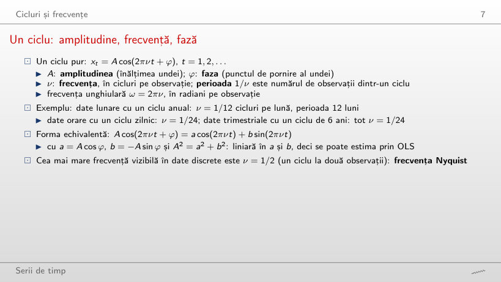
Exemplu rezolvat
Răspuns
a = 2 cos 1,5 = 0,14 și b = −2 sin 1,5 = −1,99: cu o fază apropiată de π/2 ciclul este aproape un sinus pur, cu semn negativ. Oricare ar fi faza, a² + b² = 4 = A².
Două cicluri plus zgomot
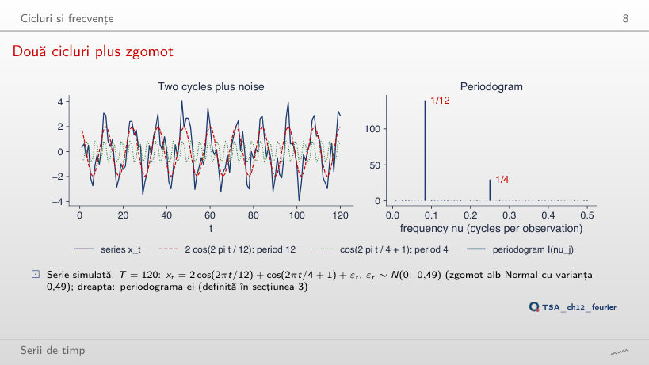
Răspuns
119,2, de patru ori mai înalt decît cu amplitudinea 1 (29,6) și aproape de teoria A²T/4 = 4·120/4 = 120: vîrful crește cu pătratul amplitudinii. Vîrful de la 1/12 rămîne 139,7, peste valoarea teoretică 120, pentru că la aceeași frecvență contribuie și zgomotul; fără zgomot cele două vîrfuri sînt exact 120 și 30.
Exemplu rezolvat: DFT pentru patru numere
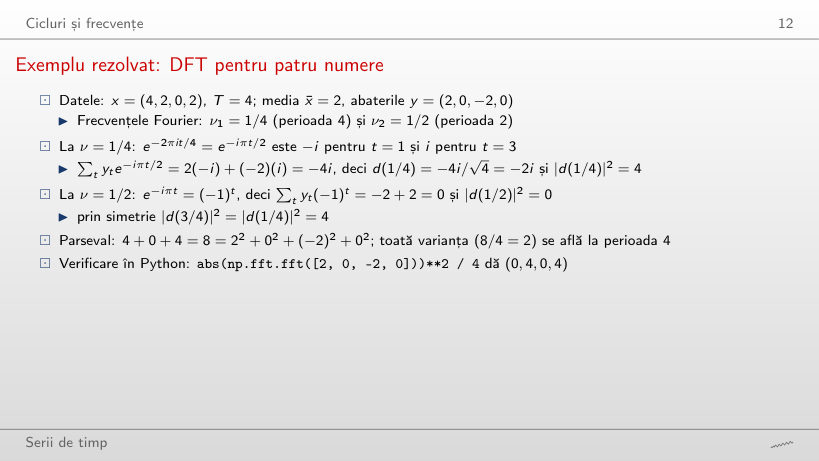
Exemplu rezolvat
Răspuns
Toată la ν = 1/2: abaterile (1, −1, 1, −1) alternează, deci |d(1/2)|² = (−4)²/4 = 4, iar |d(1/4)|² = |d(3/4)|² = 0; Parseval: 4 = 1 + 1 + 1 + 1. Seria are perioada 2.
Aliasing
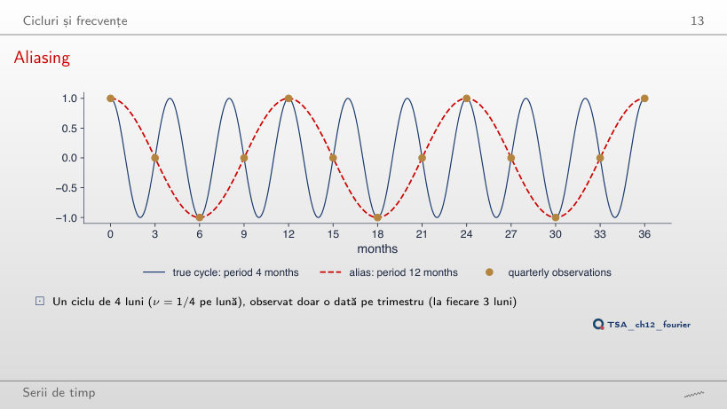
Răspuns
O constantă: ciclul are 4/4 = 1 ciclu pe observație, care se pliază la |1 − 1| = 0, deci fiecare observație cade în același punct al ciclului și ciclul de 4 luni dispare din date (un alias de perioadă infinită). La Δ = 5 luni același ciclu apare ca un ciclu de 20 de luni.
Interpretarea fenomenului de aliasing
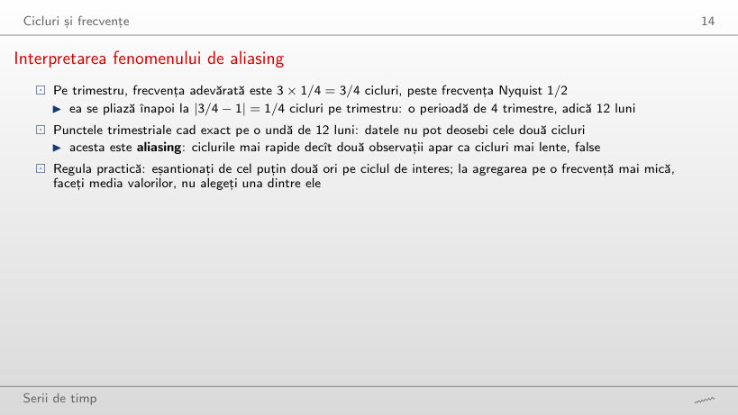
Exemplu rezolvat
Răspuns
15 luni: 3/2,5 = 1,2 cicluri pe trimestru, care se pliază la |1,2 − 1| = 0,2, adică 5 trimestre. Un ciclu mai rapid decît observațiile apare ca un ciclu mai lent, fals.
Densitatea spectrală
Exemplu rezolvat: spectrele AR(1) și MA(1)
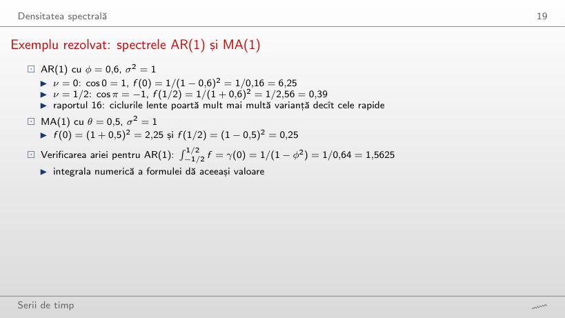
Exemplu rezolvat
Răspuns
f(0) = 1/1,6² = 0,39 și f(1/2) = 1/0,4² = 6,25: imaginea în oglindă a cazului φ = 0,6. Un φ negativ face seria să alterneze, deci puterea trece la frecvențele cele mai înalte; varianța rămîne 1,5625.
Exemplu rezolvat: vîrful spectrului unui AR(2)
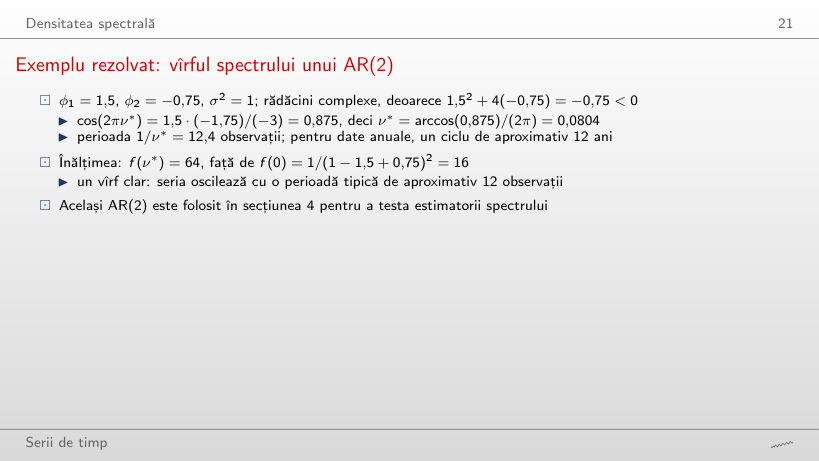
Exemplu rezolvat
Răspuns
Spre una mai scurtă: 9,1 observații la φ₂ = −0,95 (12,4 la −0,75 și 20,2 la −0,65), iar vîrful devine mult mai înalt (981 față de 64). Un φ₂ mai negativ aduce rădăcinile complexe mai aproape de cercul unitate (modulul lor este √−φ₂) și accelerează oscilația ACF.
O galerie de densități spectrale
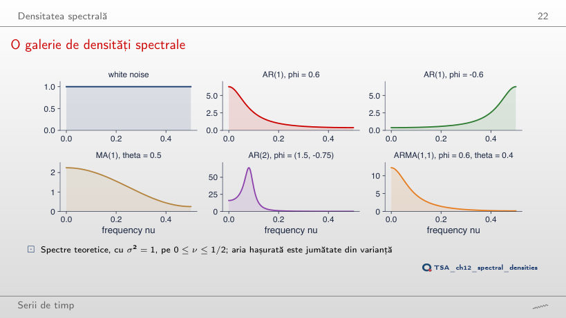
Răspuns
58%, față de 20% pentru zgomotul alb, care își împrăștie varianța uniform: banda [0; 0,1] este o cincime din [0; 0,5]. Pentru AR(2) ponderea este 81%, pentru AR(1) cu φ = −0,6 doar 5%.
Periodograma
Petele solare și periodograma lor
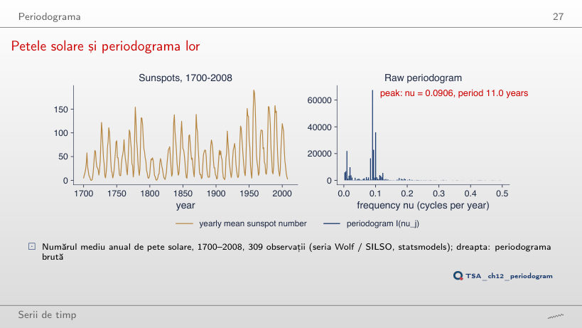
Răspuns
La 10,9 ani (j = 10), aproape de cei 11,0 ani ai eșantionului întreg: ciclul se vede și într-un secol de date, dar grila Fourier este mai rară (perioadele 109/j: 12,1; 10,9; 9,9 ani). Testul lui Fisher dă g = 0,222 și valoarea p 0,00009.
Interpretarea periodogramei petelor solare
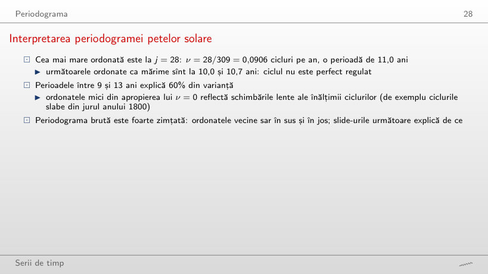
Răspuns
63%, față de 60% pentru 9–13 ani: perioadele dintre 13 și 20 de ani adaugă doar 3 puncte procentuale. Aproape toată puterea ciclului solar este între 9 și 13 ani; cu banda de 5–20 de ani ponderea ajunge la 73%, pentru că intră și armonica de aproximativ 5,5 ani.
Proprietățile statistice ale periodogramei
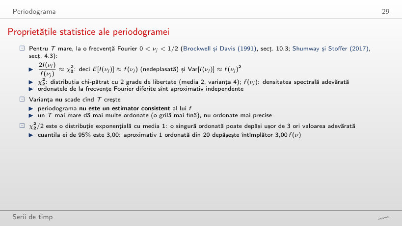
Răspuns
37,6% pentru T = 2048, aproape de e−1 = 36,8%, nu 50%: distribuția exponențială are media 1, dar mediana ln 2 = 0,69, deci majoritatea ordonatelor sînt sub f, iar puținele valori mari ridică media. Pentru c = 3 ponderea este 5,1% (teoria 5,0%).
Periodograma zgomotului alb
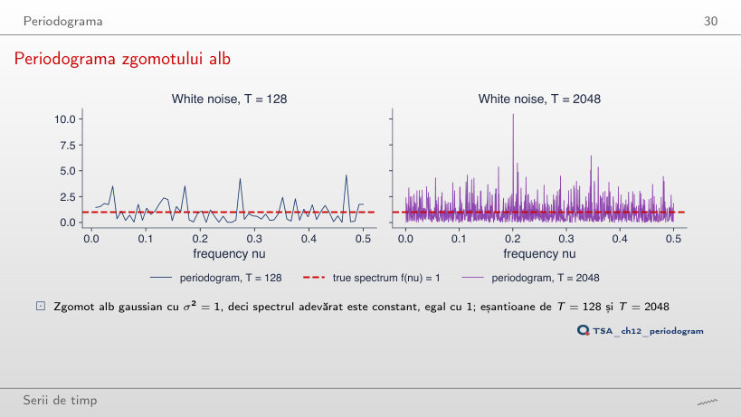
Răspuns
0,21, aproape de 1/√21 = 0,22: media a L ordonate aproape independente împarte abaterea standard la √L; pentru T = 128 este 0,20. Un eșantion mai lung nu reușea singur acest lucru: periodogramele brute au abaterile standard 1,03 și 1,00.
Estimarea spectrului
Scurgerea: periodograma brută și cea cu atenuare
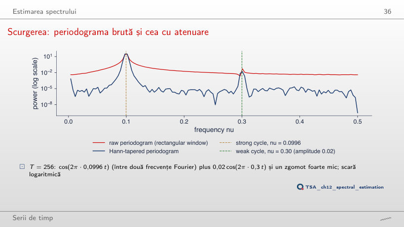
Răspuns
De 755 de ori, față de 7,7 la j = 25,5: un ciclu care încape de un număr întreg de ori în eșantion nu produce scurgere, iar fondul coboară la nivelul zgomotului foarte mic. Cu fereastra Hann raportul este 4 176, aproape același pentru orice j.
Netezirea periodogramei (1/2): estimatorul Daniell
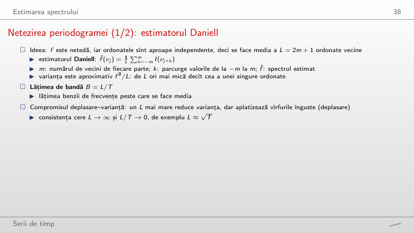
Exemplu rezolvat
Răspuns
La 11,0 ani (j = 28), cea mai mare ordonată brută; cu m = 2 vîrful netezit trece la 10,3 ani (j = 30), pentru că media celor cinci ordonate din jurul lui j = 30 este cea mai mare. Cu m = 4 vîrful revine la 11,0 ani: poziția vîrfului netezit variază cu una-două frecvențe Fourier.
Estimări netezite ale spectrului unui AR(2)
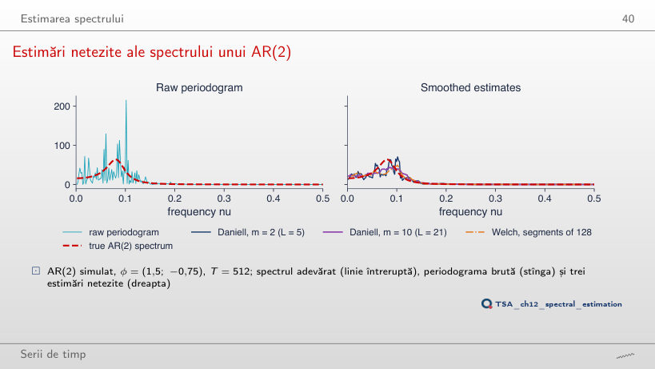
Răspuns
La ν = 0,0625 (perioada 16,0), cu înălțimea 36,1, față de vîrful adevărat de la ν = 0,080 cu înălțimea 64: fereastra are lățimea 41/512 = 0,08, cît frecvența vîrfului, deci îl aplatizează și îl deplasează. Eroarea pătratică medie a lui log f̂ crește din nou, la 0,11 (0,09 la m = 10 și la m = 15).
Interpretarea estimărilor netezite
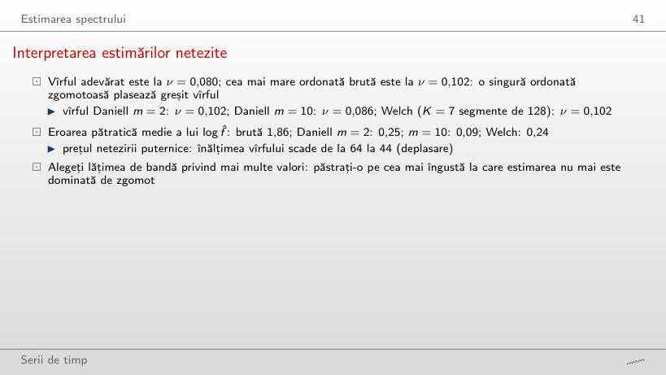
Răspuns
La m = 12 (0,089), foarte aproape de m = 10 (0,092); la m = 30 eroarea urcă la 0,22. Pînă la m = 12 scade varianța, apoi domină distorsiunea: înălțimea vîrfului scade de la 64 la 44,7 la m = 12 și la 31,5 la m = 30.
Exemplu rezolvat: o bandă de 95% pentru L = 5
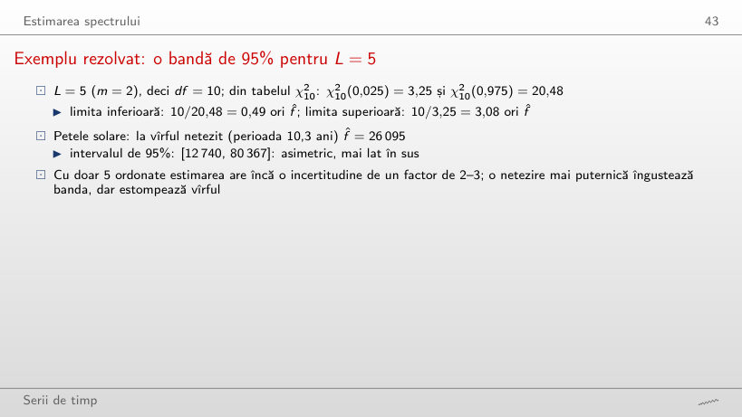
Exemplu rezolvat
Răspuns
1,62 (și cel inferior 0,68), față de 3,08 și 0,49 pentru L = 5: banda se îngustează aproximativ ca 1/√L. Banda rămîne asimetrică, mai largă în sus, pentru că distribuția χ² are coada spre dreapta.
Petele solare: spectrul netezit cu bandă de încredere
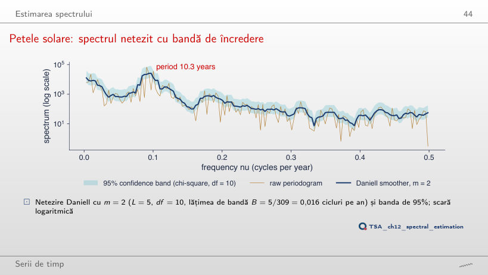
Răspuns
De 39,5 ori (2/χ²₂(0,025) = 2/0,0506), iar limita inferioară este 0,27 × f̂: o singură ordonată spune foarte puțin despre înălțimea spectrului. Cu m = 2 multiplicatorii sînt 0,49 și 3,08, cu m = 8 sînt 0,65 și 1,72.
Cicluri în datele economice și energetice
Creșterea PIB și ciclurile HP
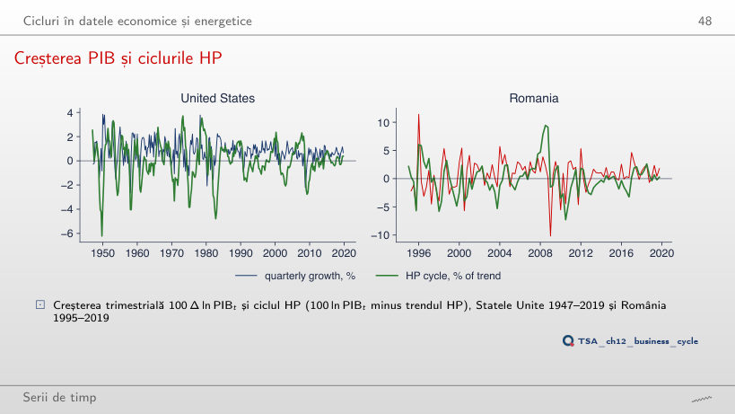
Răspuns
Scade, la 1,03: un λ mai mic lasă trendul să urmeze mai îndeaproape datele, deci ciclul păstrează doar fluctuațiile mai rapide; cu λ = 25 600 crește la 2,23. Ratele de creștere nu depind de λ (abaterea standard 0,93).
Spectrele creșterii PIB și ale ciclurilor HP
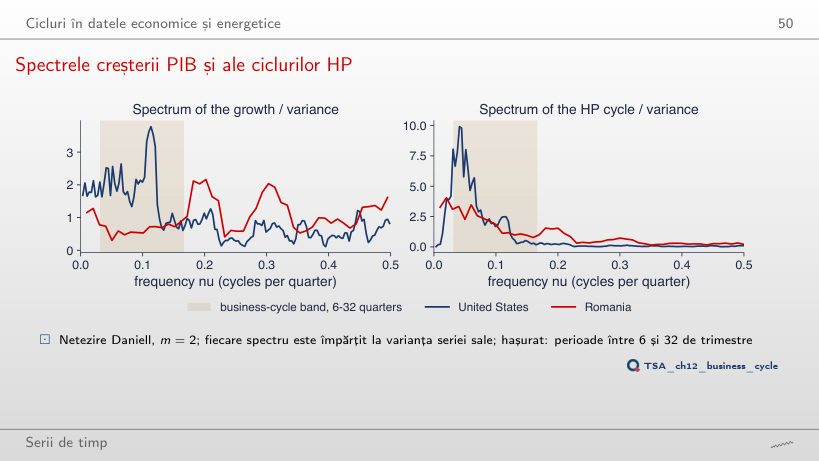
Răspuns
La 26,5 trimestre (6,6 ani), față de 24,3 cu m = 2: o ordonată brută este zgomotoasă, iar vîrful netezit se poate muta cu o frecvență Fourier (T = 292: 292/11 = 26,5, 292/12 = 24,3). Vîrful creșterii SUA rămîne la 8,8 trimestre.
Interpretarea spectrelor PIB
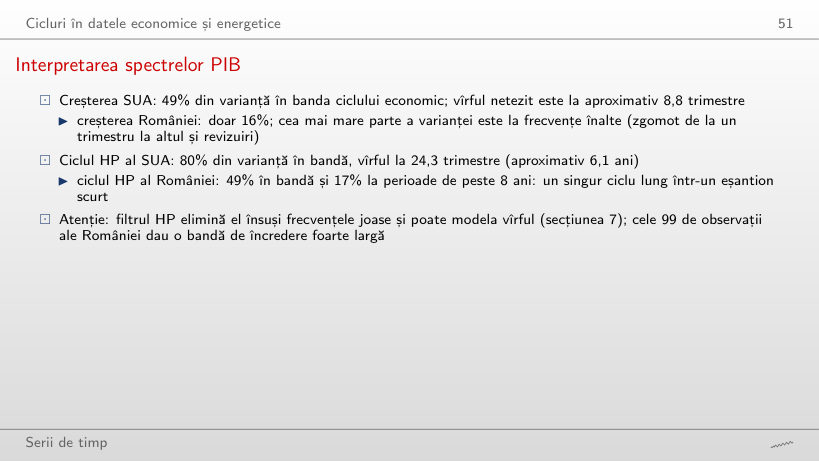
Răspuns
90%, față de 80% pentru 6–32 de trimestre: ciclul HP al SUA are încă multă putere între 8 și 12 ani. Pentru creșterea României ponderea rămîne 15,6%, pentru că varianța ei este la frecvențele înalte.
Ritmul consumului de energie electrică
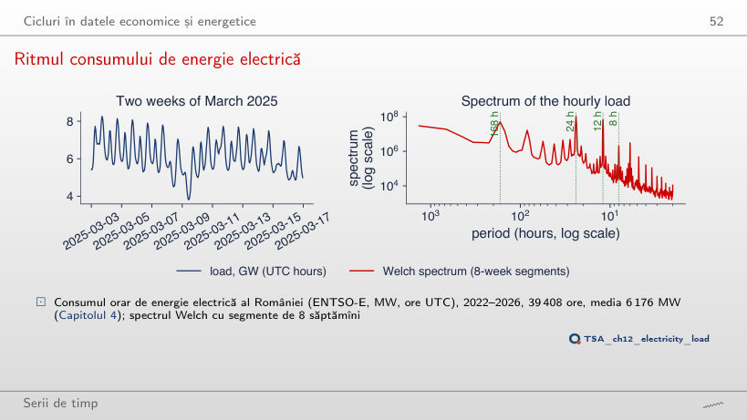
Răspuns
La 12 ore, înaintea celei de 24 de ore (la fel în 2025); pe 2022–2026 cea mai mare este ordonata de 24 de ore. Profilul zilnic cu două vîrfuri, dimineața și seara, pune multă putere în armonica de 12 ore, iar ordinea celor două se poate schimba de la un an la altul.
Interpretarea spectrului consumului
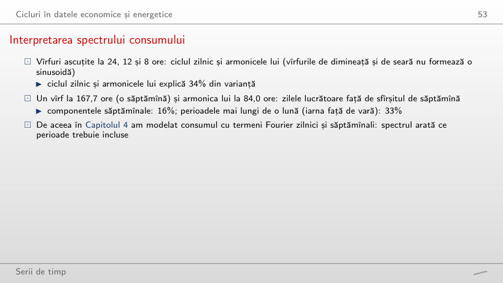
Răspuns
Foarte puțin: de la 33,7% la 33,4%. Ciclul zilnic este aproape perfect periodic, deci puterea lui stă în cîteva ordonate foarte înguste la 24/k ore; ciclul săptămînal scade mai mult, de la 15,7% la 14,9%: puterea lui este răspîndită pe mai multe ordonate vecine.
Memoria lungă: polul de la zero
Polul de la zero în datele bursiere
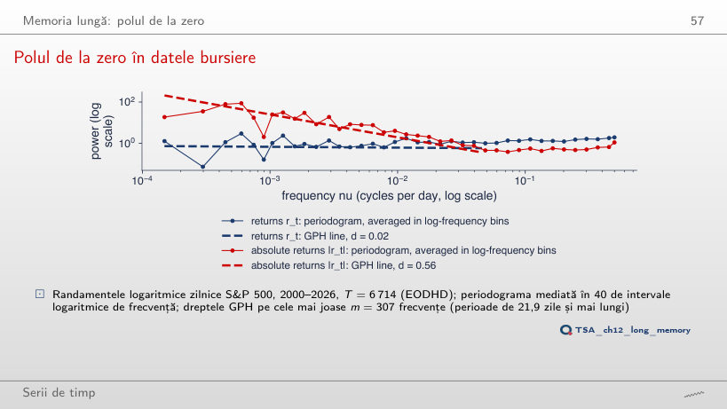
Răspuns
0,38, față de 0,56 cu m = 307, cu eroarea standard 0,089; cu exponentul 0,80 (m = 1 152) este 0,41. Estimația depinde de lățimea benzii: puține frecvențe dau o eroare standard mare, multe frecvențe aduc efecte de memorie scurtă. Pentru randamente d̂ rămîne între −0,04 și 0,14.
Filtre liniare
Filtrele liniare și cîștigul lor (2/2)
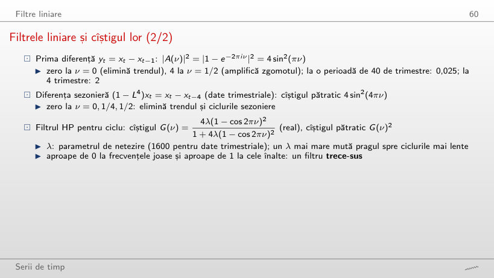
Exemplu rezolvat
Răspuns
La 45,0 trimestre (11,3 ani), față de 31,8 trimestre pentru λ = 1600: un λ de 4 ori mai mare mută pragul spre ciclurile mai lente, aproximativ cu factorul 41/4 = 1,41. La 32 de trimestre G² crește de la 0,49 la 0,82.
Cîștigurile pătratice ale filtrelor uzuale
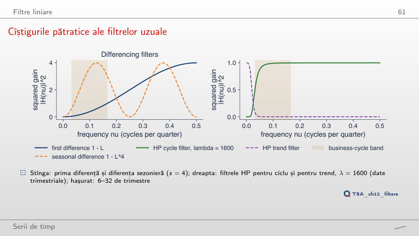
Răspuns
0: 4 sin²(4π/4) = 4 sin²(π) = 0. Diferența sezonieră elimină ciclul anual al datelor trimestriale (și armonica lui de 2 trimestre), în timp ce diferența de ordinul întîi îl amplifică de 2 ori. La 8 trimestre diferența sezonieră are cîștigul maxim, 4.
Interpretarea cîștigurilor filtrelor
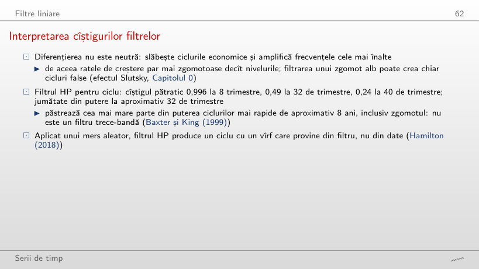
Răspuns
0,017, față de 0,49 pentru λ = 1600: cu λ = 100 trendul urmează aproape toate ciclurile de 8 ani, iar ciclul HP păstrează doar perioadele scurte (jumătate din putere la 15,8 trimestre). La 8 trimestre cîștigul pătratic este încă 0,94.
Două serii: coerență și fază
Producția industrială și șomajul
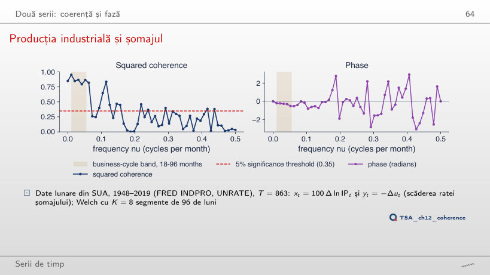
Răspuns
Scade de la 0,35 la 0,17 (1 − 0,051/16): mai multe segmente fac coerența netezită mai precisă, deci o valoare mai mică este deja semnificativă. Coerența medie în banda de 18–96 de luni crește la 0,90, iar faza la ciclul de 48 de luni dă o întîrziere de 2,1 luni. Cu segmente de 144 de luni (K = 5) pragul este 0,53.
O trimitere: wavelets
Puterea wavelet a petelor solare
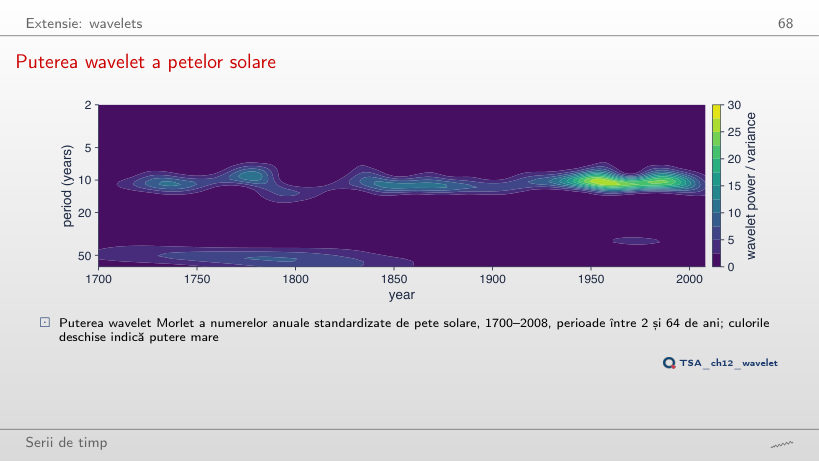
Răspuns
Crește de la 2,0 la 2,5, iar media pe tot eșantionul trece de la 5,7 la 5,9: o undă mai lungă mediază pe mai mulți ani, deci minimul slab din jurul lui 1800 se amestecă cu vecinii lui. Anul maximului rămîne în jurul lui 1956.
Simulările capitolului (sămînța 2026): extragerile Normale din exemplul cu două cicluri (T = 120), din periodogramele zgomotului alb (T = 128 și T = 2048), din exemplul de scurgere spectrală (T = 256) și seria AR(2) simulată din exemplul de netezire (T = 512). Petele solare anuale 1700–2008 (statsmodels), consumul orar de energie electrică al României 1 ianuarie 2022 – 30 iunie 2026 (extrasul ENTSO-E din Capitolul 4, pus pe o grilă orară regulată de funcția capitolului) și randamentele zilnice S&P 500 2000–2026 (EODHD) nu sînt revizuite și reproduc exact cifrele din curs. PIB-ul real al SUA (FRED GDPC1) și producția industrială și rata șomajului din SUA (FRED INDPRO, UNRATE), citite pe 4 noiembrie 2026 și tăiate la 2019 ca în curs, reproduc exact cifrele din curs. PIB-ul real al României (Eurostat namq_10_gdp) a fost revizuit după realizarea slide-urilor: pagina folosește varianta din slide-uri, citită din graficul vectorial charts/tsa_ch12_gdp_series.pdf, în care fiecare dintre cele 99 de rate trimestriale de creștere (1995 T2 – 2019 T4) este un vîrf al liniei; ele reproduc cifrele din curs pînă la a șasea cifră semnificativă; valorile cu datele Eurostat din 4 noiembrie 2026 sînt date alături. Variantele care nu apar în curs (alte amplitudini, alte eșantioane, alte lățimi de bandă, alte valori ale lui λ, alte segmente, alt ω₀) sînt rulări suplimentare ale codului capitolului pe aceleași date; graficele din „Interpretarea fenomenului de aliasing”, „Interpretarea periodogramei petelor solare”, „Proprietățile statistice ale periodogramei”, „Interpretarea estimărilor netezite”, „Interpretarea spectrelor PIB”, „Interpretarea spectrului consumului” și „Interpretarea cîștigurilor filtrelor” sînt grafice suplimentare pentru slide-uri care dau doar cifre.